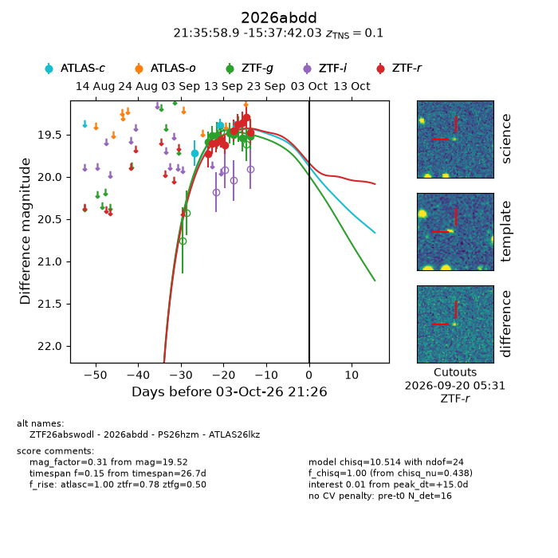
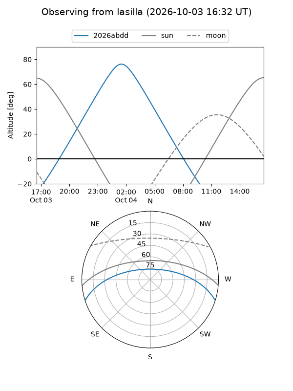
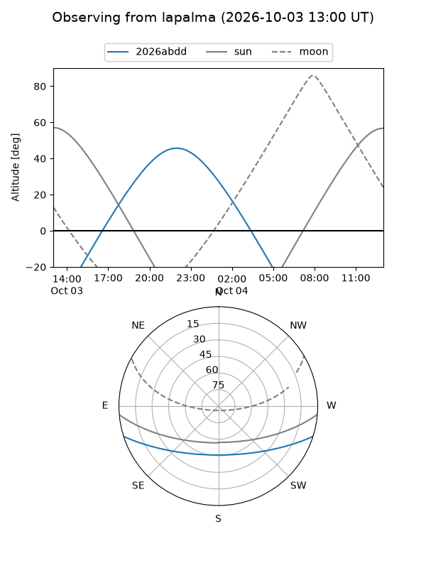
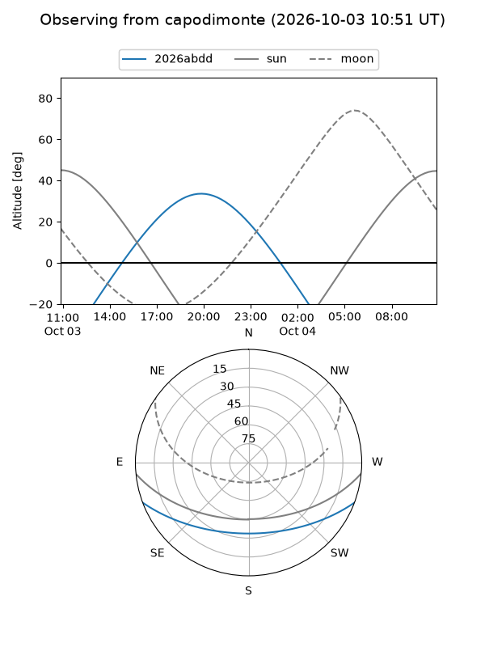
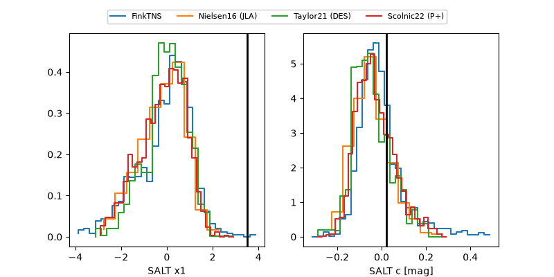

2026abdd
Target 2026abdd at 2026-10-03 21:28
Aliases and brokers:
FINK-ZTF: ztf.fink-portal.org/ZTF26abswodl
Lasair-ZTF: lasair-ztf.lsst.ac.uk/objects/ZTF26abswodl
ALeRCE-ZTF: alerce.online/object/ZTF26abswodl
YSE-PZ: ziggy.ucolick.org/yse/transient_detail/2026abdd
TNS name: wis-tns.org/object/2026abdd
Direct TNS query: direct search
alt names
ZTF26abswodl (ztf,fink_ztf)
2026abdd (tns,yse)
ATLAS26lkz (atlas)
PS26hzm (panstarrs)
Coordinates:
equatorial (ra, dec) = 323.9952,-15.62834
equatorial (HMS+DMS) = 21:35:58.85,-15:37:42.03
galactic (l, b) = (36.8060,-43.36703)
Flags:
TNS type: SN Ia
TNS redshift: 0.1000
peak dt: +15.0
Photometry:
last atlasc=19.39, ztfg=19.52, ztfr=19.48
2 atlasc, 7 ztfg, 10 ztfr detections
Lightcurve

Visibility



Additional plots
